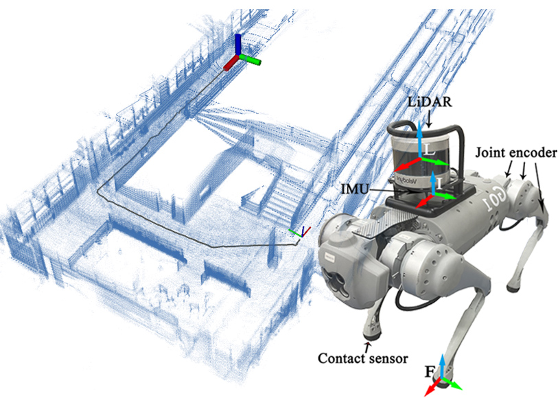

Guangjun Ou 区广峻
SLAM Engineer
Hi, I'm Guangjun Ou. I work on robot localization and mapping, multi-sensor fusion, and state estimation for legged robots.
I received my master's degree from Guangdong University of Technology in 2025. My current work focuses on robotics algorithm development and deployment in real-world systems. Here I share my open-source projects and research.
🛠️ Projects
An open-source SLAM system for robot localization and mapping. The current version fuses LiDAR and IMU measurements with an ESKF frontend and a factor graph backend, supporting loop closure, map export, and ROS 1 / ROS 2.
The project originated from research on kinematic, inertial, and LiDAR fusion for legged robots and continues to evolve.
📄 Publications

Guangjun Ou, Dong Li, Hanmin Li
IEEE Robotics and Automation Letters (RA-L), 2024
A multi-sensor fusion odometry framework for dynamic legged robots, combining leg kinematics, inertial measurements, and LiDAR to improve the robustness of localization and mapping.